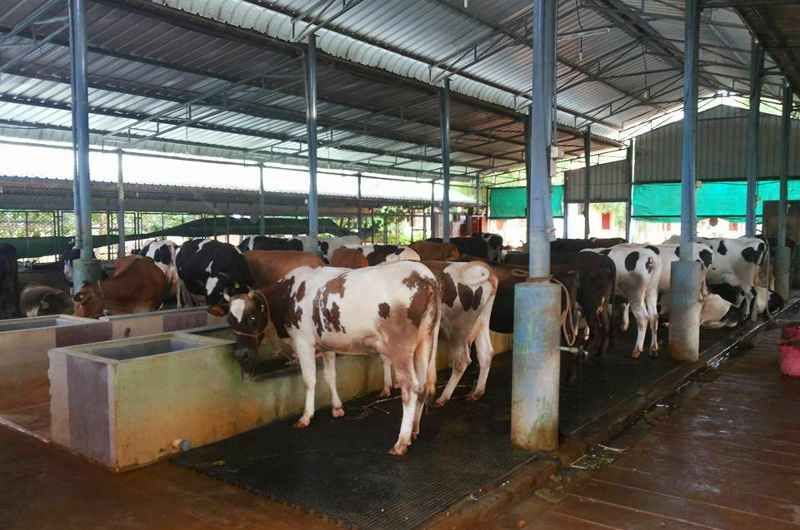
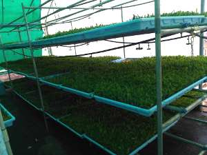

Dairy form of cattle farming is a major, lucrative business primarily because a dairy farm is an ‘all season’ business. Irrespective of the season the demand for milk is either constant or increases. There has never been a decrease in the demand for milk and milk products in India.
Introduction on Dairy Farming in IndiaDairy farming has been an age-old business in India passed down from generation to generation. During the late 20th century, this tradition saw a decline. However, thanks to the advancements made in science and technology, a huge progress has been made. The contribution made by Amul in the form of ‘White Revolution’ played a very important role in transforming the dairy industry in India from its stagnation level to a world leader.
Cows farms and buffalo farms are the foundation of the dairy industry. Breeds of buffaloes like Jaffarbadi, Mehsani and Murrah are the high breeding ones while Red Sindhi, Gir, Rathi and Sahiwal are the top milk breeders from India.
Pre-Requisites for Dairy FarmingLike any other farming, dairy farming also has a list of pre-requisites. Some of these are as below:
The above list is a basic list that can go endless. Commercial dairy farming is very different from the traditional farming as it has a lot of technological requirements and challenges.
Choosing Healthy Cattle for Dairy FarmThis is the first requirement for a successful cattle farming. The animals must be healthy, with good weight and build. While purchasing cattle the eyes, nose, udders, mobility, coat and other features must be carefully observed.
Shelters for animals are an important factor for optimizing the yield. Stress and weather changes cause a decline in productivity. The housing facilities must be clean, spacious and must allow flow of natural air and sunlight.
House Construction in Dairy FarmThe cattle shed must have a floor space of 10 feet by 5.5 feet per animal with a 1.5% slope towards the drain. The floor must be made of rough concrete material. The sheds must be at least 10 feet high. They may be constructed using bricks, RCC or can be thatched. Only the western side of the shed must be walled while the other three sides must be left open. However, the open sides must be covered with gunny cloth during winter to protect the animals from cold. There should also be a provision for sprinkling water on the animals every half hour during summer. This reduces heat stress to a great extent. The eastern side of the shed is open outdoors for free roaming space. The roaming area is covered with trees providing shade. Neem and mango trees are the most preferred trees for shade in the roaming area.
Manger ArrangementThe mangers are located on the western side of the shed. They are built 1 foot above the floor level; they are 2 feet wide and 1.5 feet deep. Drinking water must be kept beside the manger. The mangers are generally constructed along with the shed construction. At some places, they may provide a separate box as mangers.
Heat Stress Management in Cattle FarmingAnimals are extremely sensitive to heat and heat stress affects their milk production to a great extent. Following are the noticeable symptoms of heat stress:
Several of the above symptoms occurring together are signs of heat stress. As said before the sheds must have adequate air circulation and sprinklers to spray water. Water evaporation from the body leads to cooling of the body. Thus the body temperature decreases and the animals are comfortable. Therefore, food energy is utilized for milk production and not in other bodily functions like blood pumping, breathing, panting, etc.
Animal Feeding in Dairy FarmingFood is one of the most basic aspects of living beings for they perish owing to lack of food. Cattle feeding cost a total of 70% of the milk production. Cattle are fed with fodder, grains, brans, green fodder, straw, oil cakes and other such cattle feed. Fodder Provision
The feed for a normal adult animal is 15-20 Kg of green fodder and 6 Kg of dry fodder per day. The green fodder is harvested during the flowering stage and the surplus fodder is preserved for hay. Preserved fodder is used during summers when fresh green fodder is unavailable. It is necessary to strike a balance between the various nutrient requirements for optimal milk production. If the animals are given an exclusive dry fodder diet, then they must be given Urea Molasses Mineral Block as the supplement. They are also fed with bypass protein feed or compound cattle feed for an efficient production of milk and better body maintenance. In case the feed needs changing, the change must take place gradually. To increase digestibility and reduce wastage, fodder is chaffed and they are fed 3-4 times a day in equal intervals. This rationing is an attempt at reducing wastage and increasing digestibility.
Water is needed for digestion, nutrient distribution, excretion, maintenance of body temperature and of course, milk production. Every liter of milk produced needs an additional 2.5 liters of water since milk contains 85% of water. Hence, a normal healthy adult animal requires 75 to 80 liters of water per day usually. This can increase to 100 liters during summers. They must have regular access to clean drinking water. Crossbred buffaloes and cows are given a bath twice a day during summer to maintain their body temperature.
Pregnant AnimalsFemale calves must be given good care and proper nutrition to ensure healthy and rapid growth. Rapid growth helps them attain puberty early. They calve at 2 to 2.5 years of age if given timely insemination. Maximum care must be taken during last three months of pregnancy since the foetus develops rapidly at this time. The daily food requirement of a pregnant animal is as below:
| Food | Weight |
|---|---|
| Green Fodder | 15-20 Kg |
| Dry Fodder | 4-5 Kg |
| Oil cake | 1 Kg |
During calving, animals undergo a lot of stress. Hence they would have a low appetite and tend to eat far lesser than what their body needs. Since the appetite is low the cows and buffaloes are given boiled rice, wheat bran, wheat mixed with edible oil, jaggery, boiled millet, rice gruel, ginger, black cumin, etc. The food must be light, warm, palpable and mildly laxative. This type of diet must be given for 2-3 days after calving and it helps in early expulsion of placenta. It advisable to give the animals fresh green fodder and water. While the ration food must be warm, the water must not be boiled or hot. It should be fresh water. Clean drinking water is very necessary for milking cows else they are likely to develop diseases.
Taking Care of the NewbornThe life of a calf is divided into 2 parts as the first 24 hours after birth and the rest of the period.
Part 1- First 24 HoursThe first 24 hours has a deep connection with its life later. If not given proper care, the calf may develop diseases, perish or be an underperformer. The first hour after birth is called as the ‘golden hour’ since this is a critical period. The following points must be taken care of during that period:
Colostrum is an important feed for newborn milk especially is contains high amounts of proteins and antibodies which help build immunity. It helps the calf ward off infections. Most calves do not nurse adequate amount of colostrum from their mothers therefore hand feeding is necessary. This ensures that the calf has the required amount of colostrum. However, feeding colostrum after the first 24 hours has passed would not help in warding off infections or building immunity.
Diseases in Cow FarmingAfter calving there is a huge demand of nutrients, minerals and other essentials requirements in the body. Unless managed properly, animals very easily develop metabolic diseases that would affect milk production drastically. If not given timely treatment it might even lead to death. The following are some of the diseases that may develop during the period after calving:
| Disease | Causes | Symptoms | Treatment and Prevention |
|---|---|---|---|
| Hypocalcaemia | Low level of calcium in blood. | Head bobbing, ear twitching and fine tremors near loins in initial stages. | Complete milking in first 48 hours would precipitate milk fever. |
| Hypomagnesaemia | Occurs due to low level of magnesium in blood. | Suddenly they throw up their heads and gallop around | Veterinarian must be contacted in case of severity in symptoms. |
The digestive system of cattle is a complex one involving four different chambers, a host of microbes, etc. Hence any change in feeding pattern would lead to imbalance in the microbes and hence different diseases like bloating, laminitis and rumen acidosis. While home remedies can take care of bloating, laminitis and acidosis need a veterinary care.
MastitisThis is major disease causing heavy loss in dairy farming. It can lead to lower milk production, permanent damage to udders and even death in severe cases. This disease is on the rise owing to more and more farmers opting for crossbreeding. Exotic breeds like Jersey are also highly susceptible to mastitis. A way to deal with the disease is to understand it properly and give timely treatment. Some of the practices followed maybe:
There are some highly fatal diseases like foot and mouth diseases, black quarter, hemorrhagic septicemia, rabies, infectious bovine rhinotracheitis, theileriosis and anthrax that are endemic in nature. These cause heavy losses to the dairy business. Fortunately they can be controlled by vaccination. The schedule for vaccination is as below:
| Name of Disease | First Dose | Booster Dose | Subsequent Doses |
|---|---|---|---|
| Foot and Mouth Disease | 4 months and above | One month after first dose | Every six months |
| Black quarter | 6 months and above | Once every year in case of endemic occurrence |
Besides the raw milk there is a huge market of milk products like powdered milk, ghee, cheese etc. Even the waste in dairy farming is valuable and has good market demand. The ‘gobar’ or cow dung is the raw meterial of organic compost or vermicompost. If you’re using ‘desi cow’ or Indian cow breed in your cow farm then the cow urine is a valuable resource to make ‘panchagavya’ or natural insecticide in organic farming.
ConclusionLooking after and maintaining good animal health is the gateway to successful dairy farming in India. Maintenance of animal health, looking after its breeding and nutrition supplemented with proper information system is beneficial. The government has created Information Network for Animal Productivity and Health (INAPH) for the benefit of farmers. It records the on-field cattle activities, schedules and nutrition. This channel in turn helps the farmer for regularization of his or her dairy farming business.
References: